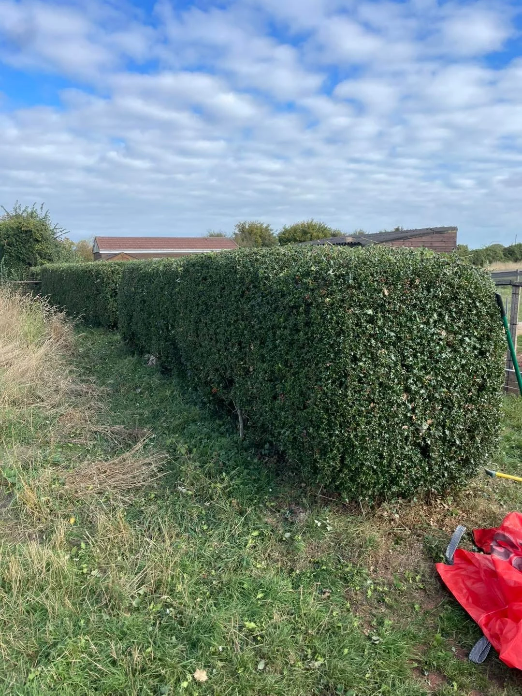

WEST SOMERSET
A closer look.
At what we do.
Browse our tree work and garden transformations. Real photographs from the business.
Reliable local serviceHomeowners & landlordsFree quotes
OUR WORK
Real gardens.
Visible results.
Grounds maintenance, fencing and garden clearances from our supplied project photographs. Tap any photo to see the complete image.
YOUR NEXT OUTDOOR PROJECT
Tell us what
you have in mind.
Free quotes for tree work, hedge care and gardens in West Somerset. Send your postcode and a few details to get started.
Prefer email? lccountrysideservices@gmail.com
Photographs of the work and access are always helpful. You can attach them to your message before sending.